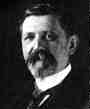

Emile Borel created the first effective theory of the measure of sets of points beginning of the modern theory of functions of a real variable.Borel was appointed to the École Normale Supérieure in Paris in 1896.
Borel created the first effective theory of the measure of sets of points. This work, along with that of two other French mathematicians, Rene Baire and Henri Lebesgue, marked the beginning of the modern theory of functions of a real variable. Borel, although not the first to define the sum of a divergent series, was also the first to develop (1899) a systematic theory for a divergent series.
In 1909 he was appointed to a chair of Theory of Functions created for him at the Sorbonne. In 1918 he received the Croix de Guerre for his efforts during the war.
In addition, he published (1921-27) a series of papers on game theory and became the first to define games of strategy.
After 1924, Borel became active in the French government serving in
the French Chamber of Deputies (1924-36) and as Minister of the Navy (1925-40).
After his arrest and brief imprisonment under the Vichy regime he worked
for the Resistance. He was awarded The Resistance Medal (1945), and the
Grand Croix Légion d'Honneur (1950). For his scientific work he
received the first gold medal of the Centre National de la Recherché
Scientifique in 1955.
Rue Borel and Square Borel are in the 17th Arrondissement in Paris.
There is a Crater Borel on the moon.